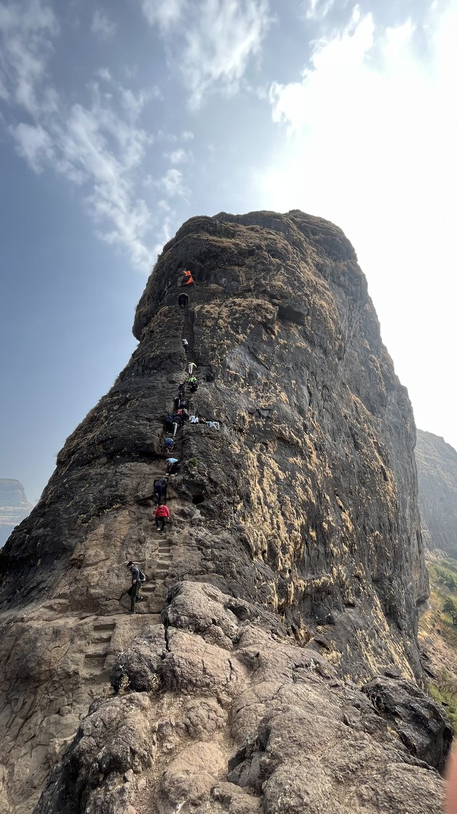
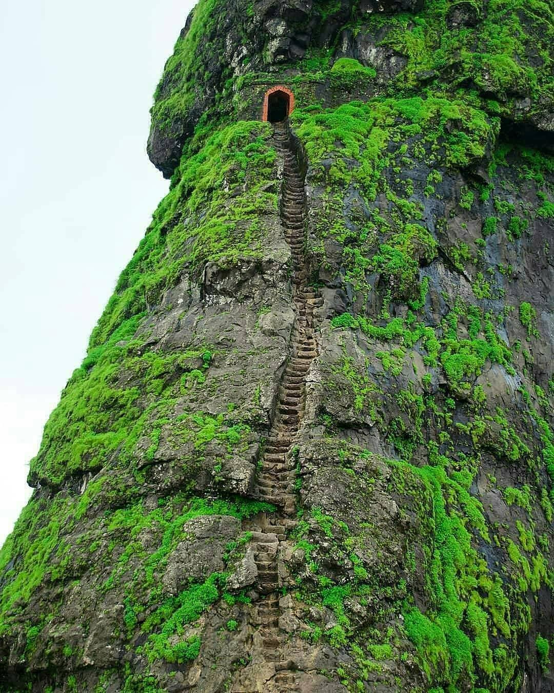

हरीहर हा महाराष्ट्रातील एक प्रसिद्ध ऐतिहासिक व धार्मिक स्थळ आहे.
हा स्थानिक लोकांसाठी पूजनीय देवस्थान मानला जातो.
हरीहर मंदिराचे प्राचीन वास्तुकला आणि सुंदर नक्काशी यासाठी प्रसिद्ध आहे.
येथे दरवर्षी धार्मिक सोहळे आणि उत्सव मोठ्या भक्तीभावाने साजरे केले जातात.
हरीहर परिसर नैसर्गिक सौंदर्याने नटलेला असून पर्यटकांसाठी आकर्षणाचे केंद्र आहे.
येथे येणारे लोक प्राचीन मंदिर पाहणे आणि परिसरातील निसर्गाचा आनंद घेणे पसंत करतात.
हरीहरचे पवित्र वातावरण आणि शांतता येथे येणाऱ्यांना आध्यात्मिक अनुभव देते.
या ठिकाणी भक्ती, इतिहास आणि निसर्ग यांचा अद्भुत संगम पाहायला मिळतो.
हरीहर हा महाराष्ट्रातील एक महत्त्वाचे धार्मिक पर्यटन स्थळ मानला जातो.